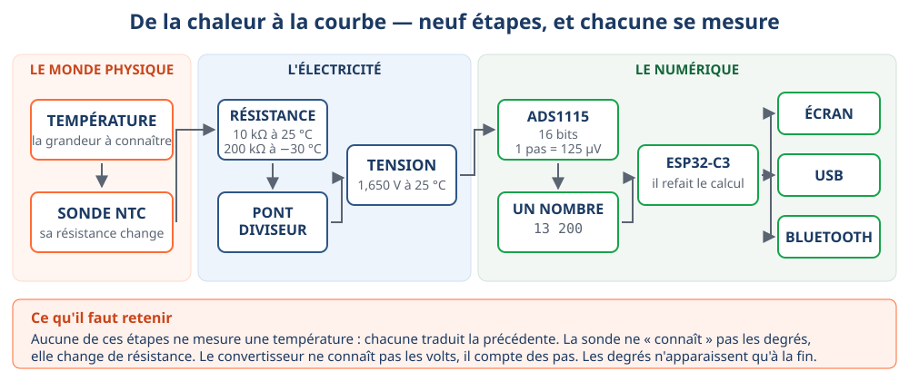
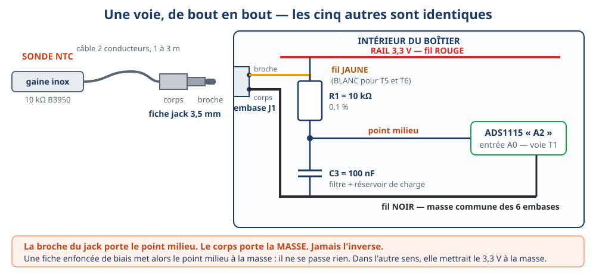
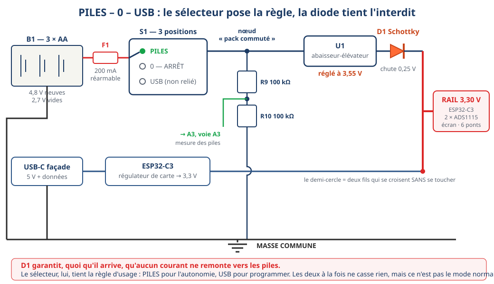

Un appareil de mesure, fabriqué puis utilisé
Six sondes de température, un écran, une prise USB, du Bluetooth, trois piles. Vous allez le construire, le contrôler, le mettre en service, puis vous en servir sur une machine réelle. À la fin, ce n'est pas une maquette : c'est un instrument d'atelier.

Les quatre modules
| Module | Durée | Ce qu'on y fait | Ce qu'on en ressort |
|---|---|---|---|
| 1 | 4 h | Comprendre la chaîne d'acquisition | Je sais pourquoi une résistance sert à mesurer une température |
| 2 | 4 h | Percer, découper, souder, câbler | L'appareil existe et il est contrôlé |
| 3 | 4 h | Programmer, contrôler, étalonner, connecter | L'appareil mesure juste, et il le prouve |
| 4 | 4 h | Poser les sondes sur une machine, enregistrer, lire | Je sais ce que les courbes disent de la machine |
Ce que l'appareil sait faire
- mesurer six températures à la fois, entre −37 °C et +105 °C (la limite haute, c'est le câble de la sonde, pas l'électronique) ;
- les afficher sur son écran, sans aucun câble ;
- les envoyer par USB et par Bluetooth, dans le même format ;
- fonctionner sur piles pendant environ deux jours ;
- dire s'il est sur piles ou sur USB, et à quel niveau sont les piles ;
- signaler une sonde débranchée au lieu d'inventer une valeur ;
- garder son étalonnage en mémoire, même débranché.
Commencer
Le matériel d'un appareil
Vingt-cinq lignes, environ 45 € par appareil terminé. Chaque ligne a une raison d'être ; les trois qui font les pannes portent un avertissement.
L'électronique
| Repère | Désignation | Qté | Ce qu'il fait |
|---|---|---|---|
| A1 | ESP32-C3 SuperMini USB-C | 1 | calcule, affiche, transmet |
| A2, A3 | ADS1115 — 16 bits, 4 voies | 2 | transforment les tensions en nombres |
| A4 | Écran OLED 1,3" 128 × 64 I²C | 1 | affiche sur place |
| R1…R6 | Résistance 10 kΩ 0,1 % | 6 | ponts diviseurs des sondes |
| R7, R8 | Résistance 10 kΩ 0,1 % | 2 | mesure de la tension d'excitation |
| R9, R10 | Résistance 100 kΩ 1 % | 2 | mesure des piles |
| C3…C8 | Condensateur 100 nF | 6 | filtrent le bruit sur chaque voie |
| D1 | Diode Schottky 1N5819 | 1 | l'anti-retour — rien ne remonte vers les piles |
| F1 | Fusible réarmable 200 mA | 1 | protège les piles d'un court-circuit |
| U1 | Convertisseur abaisseur-élévateur | 1 | fabrique du 3,3 V à partir des piles |
| S1 | Inverseur 3 positions | 1 | PILES – 0 – USB |
Les sondes et la connectique
| Désignation | Qté | Point de vigilance |
|---|---|---|
| Sonde NTC 10 kΩ B3950, gaine inox étanche | 6 | vérifier que le câble est donné pour 105 °C |
| Embase jack 3,5 mm mono, de panneau (J1…J6) | 6 | mesurer le diamètre du filetage, pas du corps |
| Fiche jack 3,5 mm mono | 6 | modèle à visser, démontable — les moulées ne se réparent pas |
| Rallonge USB-C de façade | 1 | elle doit transporter les données, pas seulement la charge |
| Porte-piles 3 × AA avec fils | 1 | — |
| Boîtier ABS ≈ 120 × 90 × 60 mm | 1 | couvercle plat de préférence : l'écran s'y encastre mieux |
| Plaque à pastilles | 1 | — |
- L'écran de 1,3 pouce n'a pas le même contrôleur que celui de 0,96 pouce. Le 1,3" est presque toujours un SH1106, le 0,96" un SSD1306. Se tromper de contrôleur donne une image décalée de deux pixels — le programme 02 sert à trancher.
- Un câble USB-C « charge seulement » ne programme rien. C'est la panne la plus fréquente et la plus déroutante : la carte s'allume et n'apparaît nulle part.
- Une résistance à 1 % au lieu de 0,1 % coûte 0,2 K d'erreur qu'aucun étalonnage ne rattrape complètement.
La nomenclature complète, avec les quantités pour une classe de 10 élèves et le
chiffrage, est dans 03_Nomenclature_et_achats.md.
Le montage, en cinq étapes
Chaque étape se termine par un contrôle. On ne passe jamais à la suivante sans que le contrôle soit passé — c'est ce qui évite de chercher, à la fin, une faute commise au début.
01 — Le boîtier
- Imprimer
gabarit-percage.svgà l'échelle 1:1 (« Taille réelle », jamais « Ajuster à la page »). - Vérifier le carré de contrôle au réglet : il doit faire 50,0 mm. S'il ne les fait pas, l'imprimante a redimensionné et tout le gabarit est faux.
- Mesurer le boîtier réel au pied à coulisse et comparer au gabarit. Les boîtiers ABS ont des congés de moulage et des colonnettes d'angle.
- Coller le gabarit au ruban de masquage, pointer chaque perçage au pointeau.
- Percer en montant en diamètre : 3 mm d'abord, puis la cote. Un foret étagé est idéal pour le plastique.
- Découper la fenêtre de l'écran à l'outil rotatif, en restant à l'intérieur du trait : on peut toujours limer, jamais rajouter.
- Ébavurer toutes les ouvertures.
- Montage à blanc : tout entre, rien ne force, le couvercle ferme. Aucune soudure avant que ce contrôle soit passé.
02 — Les six embases
- Poser les six embases, écrous serrés à la main puis d'un quart de tour.
- Étiqueter T1 à T6 tout de suite, à l'extérieur. Trois embases identiques non repérées, et le dépannage est fini.
- Relier les six corps de jack entre eux par un seul fil noir, en chaîne. C'est la masse commune.
- Souder un fil sur chaque broche : jaune pour T1 à T4, blanc pour T5 et T6.
- Numéroter chaque fil à l'étiquette avant de le lâcher.
- Continuité de chaque broche vers son fil : moins de 2 Ω. Isolement broche ↔ corps, sans sonde : infini.
03 — La soudure

- Couper le fil à la longueur, enfiler la gaine thermo AVANT de souder. Oubliée, il faut tout dessouder.
- Dénuder 5 mm. Torsader légèrement.
- Étamer le conducteur : l'étain doit mouiller les brins, pas former une boule.
- Chauffer en même temps la pastille et le fil, deux secondes, puis amener l'étain sur la zone chauffée — jamais sur la panne.
- Retirer l'étain, puis le fer. Ne plus bouger pendant le refroidissement.
- Contrôler à l'œil : une bonne soudure est brillante et forme un petit cône. Terne et bombée = soudure froide, à refaire.
- Positionner la gaine et la rétracter au pistolet à air chaud.
- Continuité au multimètre, systématiquement. L'œil se trompe, l'ohmmètre non.
04 — Les cartes
- Souder les barrettes femelles sur la plaque, pas les modules directement : une carte grillée se remplace alors sans fer à souder.
- Poser les six résistances de 10 kΩ 0,1 %, chacune entre le rail 3,3 V et le point milieu de sa voie.
- Poser R7-R8 (mesure de la tension d'excitation) et R9-R10 (mesure des piles).
- Poser les six condensateurs de 100 nF, du point milieu à la masse.
- Câbler le bus : vert = SDA vers GPIO5, bleu = SCL vers GPIO6, au plus court, contre le fond.
- ADDR de A2 à la masse. ADDR de A3 au 3,3 V. C'est ce qui donne deux adresses différentes ; interverties, un seul convertisseur est visible.
- Câbler l'alimentation : porte-piles → fusible → sélecteur → convertisseur → diode D1 dans le bon sens → rail 3,3 V.
- Les 19 contrôles ci-dessous, tous, avant toute mise sous tension.

05 — Les contrôles avant la première mise sous tension
Appareil hors tension, sélecteur sur 0, piles retirées. Un contrôle sans valeur attendue n'est pas un contrôle.
| # | Contrôle | Valeur attendue |
|---|---|---|
| 1 | Court-circuit rail / masse | > 1 kΩ — jamais 0 Ω |
| 2 | Polarité du porte-piles | +4,5 à +4,8 V, rouge au + |
| 3–4 | Continuité T1 à T6 vers les entrées | < 2 Ω chacune |
| 5 | Masse commune des 6 jacks | < 2 Ω |
| 6–7 | Chaque pont : rail → point milieu | 10,0 kΩ ± 0,1 |
| 8–9 | SDA et SCL vers les 3 modules | < 2 Ω |
| 10 | SDA et SCL non croisés (entre eux) | > 1 kΩ |
| 11–13 | Alimentation de A2, A3, A4 | < 2 Ω vers le rail |
| 14 | ADDR de A2 à la masse, ADDR de A3 au rail | < 2 Ω vers la bonne cible |
| 15 | Sens de D1 (multimètre en mode diode) | 0,2–0,4 V dans un sens, infini dans l'autre |
| 16 | Sélecteur, position par position | continuité en PILES seulement |
| 17 | Aucune liaison piles ↔ broche 5V | infini dans les 3 positions |
| 18–19 | Fixations, aucun cuivre apparent | rien ne bouge, rien ne brille |
Les onze programmes
On ne reçoit jamais le programme final d'un coup. Chaque programme prouve une chose et une seule. Une panne se trouve alors toute seule : elle est apparue entre deux programmes.
| # | Programme | Ce qu'il prouve | Ce qu'on doit voir |
|---|---|---|---|
| 01 | 01-test-carte |
la carte est vue et programmée | la LED clignote, le moniteur parle |
| 02 | 02-test-oled |
le bus existe, l'écran répond | un cadre net, sans décalage |
| 03 | 03-scanner-i2c |
trois circuits, trois adresses | 0x3C, 0x48, 0x49 |
| 04 | 04-lire-une-voie |
le convertisseur convertit | des volts, vérifiés au multimètre |
| 05 | 05-lire-une-ntc |
la première température | la valeur monte quand on serre la sonde |
| 06 | 06-lire-six-sondes |
les six voies | « sonde absente » sur les voies vides |
| 07 | 07-afficher |
l'appareil se suffit à lui-même | six valeurs à l'écran, colonnes stables |
| 08 | 08-niveau-piles |
la 8ᵉ voie | un pourcentage sur piles, « USB » sinon |
| 09 | 09-trame-usb |
la trame du § 26 | une ligne par seconde dans le moniteur |
| 10 | 10-bluetooth-ble |
la même trame, sans fil | l'appareil apparaît sous son nom |
| 11 | 11-version-finale |
étalonnage, extrema, pannes | l'étalonnage survit à la coupure |
Les réglages de l'IDE Arduino
| Réglage | Valeur | Ce qui arrive sinon |
|---|---|---|
| Carte | ESP32C3 Dev Module | — |
| USB CDC On Boot | Enabled | le moniteur série reste muet |
| Schéma de partition | Huge APP (3MB No OTA) | à partir du programme 10 : « text section exceeds available space » |
| Moniteur série | 115200 bauds | des caractères illisibles |
Bibliothèques
- U8g2 (Oliver Kraus) — à partir du programme 02 ;
- Adafruit ADS1X15 — à partir du programme 04 ;
- le Bluetooth n'a rien à installer.
Les commandes de l'appareil
À taper dans le moniteur série, ou à envoyer depuis l'outil d'acquisition.
| Commande | Effet |
|---|---|
? | l'appareil se présente |
H=14:05:30 | règle l'horloge |
I=5 | un relevé toutes les 5 secondes (1 à 3600) |
ZC3=0.0 | étalonne la voie 3 : « en ce moment, elle voit 0,0 » |
Z3=-0.4 | impose directement un décalage à la voie 3 |
Z? · ZR | liste · efface les six décalages |
M? · MR | mini et maxi de chaque voie · remise à zéro |
ZC1=0.0. L'appareil calcule l'écart et le retient,
même débranché.
Enregistrer et exploiter
L'outil d'acquisition est une page web, pas une application à installer. Elle se connecte à l'appareil en Bluetooth ou par le câble USB, trace les six courbes, et écrit un fichier CSV.
Ce qu'il faut pour que ça marche
| Appareil | Bluetooth | Câble USB |
|---|---|---|
| PC Windows ou Linux, Chrome ou Edge | oui | oui |
| Téléphone ou tablette Android, Chrome | oui | non |
| Mac, Chrome | oui | oui |
| iPhone / iPad | non | non |
Firefox et Safari n'ont pas le Bluetooth web. Ce n'est pas une panne de la page : c'est un choix de ces navigateurs. Sur iPhone, il faut une application tierce (nRF Connect, par exemple) — l'appareil, lui, est visible par tout le monde.
La trame
Une ligne par relevé, séparateurs point-virgule — celui d'un tableur français :
12:31:05;T1=4.8;T2=-3.2;T3=8.7;T4=52.1;T5=31.4;T6=24.8;BAT=78Une seule règle à retenir : un champ vide veut dire « pas de mesure valable ».
12:31:05;T1=4.8;T2=;T3=8.7;T4=52.1;T5=31.4;T6=24.8;BAT=
↑ sonde 2 absente ou coupée ↑ appareil sur USBLes lignes qui commencent par # sont des commentaires : l'appareil
s'y présente. Un tableur les ignore, un élève les lit.
L'horloge — et c'est un vrai sujet
Ce qu'on va regarder sur une machine frigorifique
| Voie | Où on pose la sonde | Ce qu'on en tire |
|---|---|---|
| T1 | air à l'entrée de l'évaporateur | ΔT air évaporateur : 6 à 10 K en régime établi |
| T2 | air à la sortie de l'évaporateur | |
| T3 | air à l'entrée du condenseur | ΔT air condenseur, et l'encrassement se voit |
| T4 | air à la sortie du condenseur | |
| T5 | tube d'aspiration, isolé | avec la BP : surchauffe (normale 5 à 10 K) |
| T6 | ligne liquide, isolée | avec la HP : sous-refroidissement (normal 4 à 8 K) |
Dépannage
Le symptôme est dans la colonne de gauche
| Ce qu'on constate | Hypothèses, dans l'ordre | Ce qu'on mesure |
|---|---|---|
| La carte n'apparaît nulle part sur le PC | 1. câble USB « charge seulement » 2. sélecteur pas sur USB 3. pilote |
essayer un autre câble en premier — c'est la cause la plus fréquente |
| Le moniteur série reste vide | 1. « USB CDC On Boot » désactivé 2. mauvaise vitesse |
115200 bauds, et le réglage de l'IDE |
| La compilation échoue : text section exceeds available space | schéma de partition par défaut | passer en « Huge APP » — ce n'est pas une faute de programme |
| Le scanner I²C ne trouve rien | 1. SDA et SCL croisés 2. modules non alimentés 3. masse non reliée |
contrôles 8, 9, 10, puis 11 à 13 |
| Le scanner trouve un seul ADS1115 | les deux broches ADDR au même potentiel | contrôle 14 : ADDR de A2 à la masse, ADDR de A3 au rail |
| L'écran s'allume mais l'image est décalée de 2 pixels | mauvais contrôleur dans le programme | commuter SH1106 ↔ SSD1306 en tête du programme |
| L'écran reste noir, le reste marche | 1. adresse 0x3D 2. alimentation de l'écran |
programme 03, puis contrôle 13 |
Une voie affiche ---- avec une sonde branchée |
1. fil coupé dans le câble de sonde 2. soudure froide sur la broche 3. fiche mal enfoncée |
ohmmètre aux bornes de la fiche : ≈ 10 kΩ à 25 °C |
Une voie affiche -CC |
1. fiche mal enfoncée 2. brins qui se touchent dans la fiche |
ohmmètre aux bornes de la fiche : 0 Ω = court-circuit confirmé |
Toutes les voies affichent ---- |
la tension d'excitation est fausse (R7-R8, ou le rail) | page « système » de l'écran : Vexc doit être entre 3,25 et 3,35 V |
| Une voie lit 2 à 5 K à côté des autres | 1. résistance de pont hors valeur 2. sonde d'un autre lot |
contrôle 6, puis étalonner cette voie (ZCn=) |
| Les valeurs sautent de plusieurs dixièmes | 1. condensateur 100 nF oublié 2. fil de sonde le long du bus |
contrôle visuel, puis écarter les fils |
| L'appareil s'éteint dès qu'on passe sur PILES | 1. piles usées 2. D1 montée à l'envers 3. convertisseur mal réglé |
contrôle 15 (sens de D1), puis tension en sortie de U1 : 3,55 V |
| L'écran affiche « USB » alors qu'on est sur piles | le pont R9-R10 n'est pas relié après le sélecteur | tension au point milieu R9-R10 : ≈ 2,4 V piles neuves |
| L'appareil n'apparaît pas en Bluetooth | 1. programme 09 encore chargé 2. déjà connecté à un autre poste 3. Bluetooth du PC éteint |
l'écran indique le nom ENR-T6-… : s'il n'y est pas, c'est le programme |
| La trame reçue est coupée au milieu | récepteur qui ne recolle pas les morceaux | une notification BLE fait 20 octets, la trame en fait 61 — l'outil du site recolle |
Les pannes à provoquer volontairement
En fin de module 3, l'enseignant introduit une panne et l'élève la cherche. Toutes celles-ci sont réversibles en trente secondes et sans risque.
- débrancher une sonde ;
- intervertir les deux fils ADDR des convertisseurs ;
- débrancher SDA, ou SCL ;
- remplacer une résistance de pont par une 4,7 kΩ ;
- laisser le sélecteur sur 0 ;
- changer le contrôleur d'écran dans le programme ;
- mettre des piles usées ;
- donner un câble USB « charge seulement ».
Les documents du module
Tout est dans le dossier pedagogie/enregistreur-temperature/
du dépôt. Rien n'est hébergé ailleurs, rien ne se télécharge depuis un service
extérieur.
Les dossiers
| Fichier | Pour qui |
|---|---|
00_Dossier_maitre.md | l'intrant de cadrage, archivé sans retouche |
01_Dossier_professeur.md | les 4 modules déroulés, corrigés, pannes à provoquer |
02_Dossier_eleve.md | les fiches activité, à imprimer |
03_Nomenclature_et_achats.md | ce qu'on commande, et les pièges |
04_Outillage_et_consommables.md | les 5 postes et le stock de départ |
05_Plans_et_schema.md | le schéma et les calculs |
06_Programmes_et_telechargements.md | la chaîne des 11 programmes |
07_Adaptations_par_filiere.md | une page par filière, codes officiels |
08_Evaluation.md | grille, auto-positionnement, chef-d'œuvre |
09_Exploitation_froid_clim.md | la séance sur machine |
10_Cahier_des_illustrations.md | les 50 illustrations : faites, à faire |
POINTS-OUVERTS.md | ce qui n'est pas tranché |
À imprimer
- Le gabarit de perçage — à l'échelle 1:1 sur A4, avec un carré de contrôle de 50 mm ;
- L'étiquette de façade — repérage T1 à T6, positions du sélecteur, emplacement du nom Bluetooth ;
- Le schéma général ;
- Le pont diviseur — la planche du module 1.
{kind=link}
{kind=link}
{kind=link}
{kind=link}
outils/verifier-logique.mjs — mais
« vérifié » n'est pas « éprouvé ». Montez l'appareil professeur d'abord : c'est
exactement à cela qu'il sert.